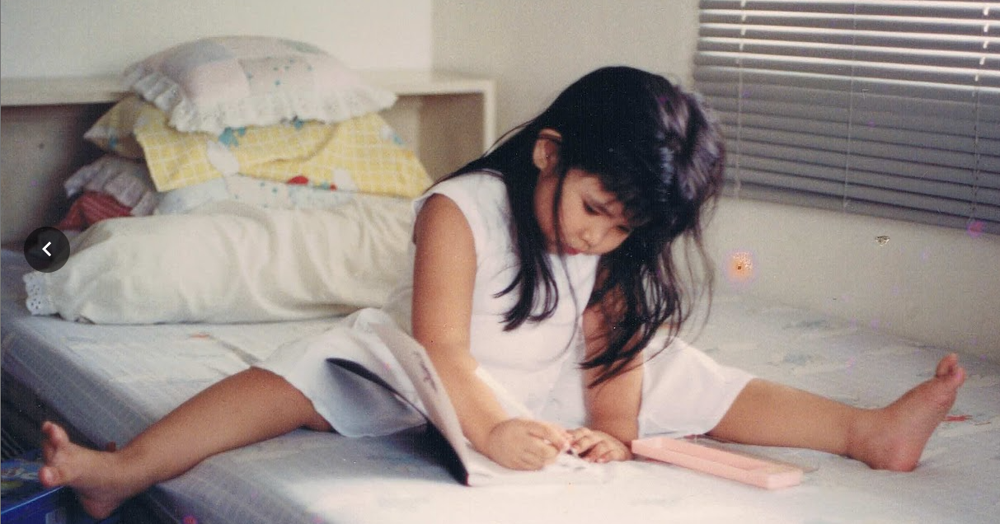
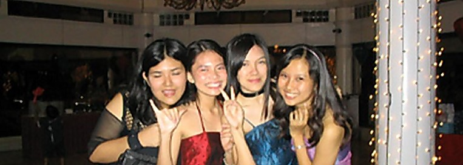
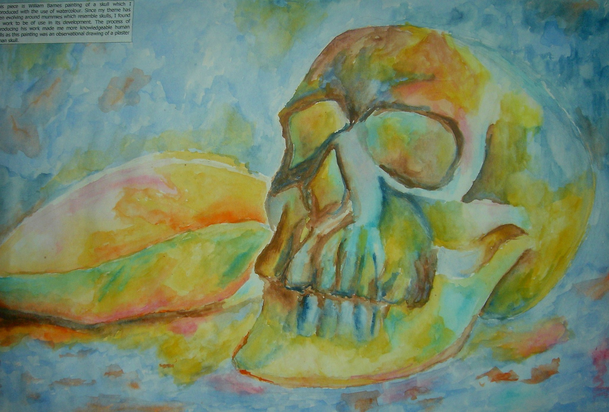
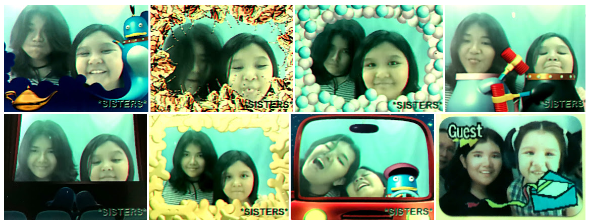
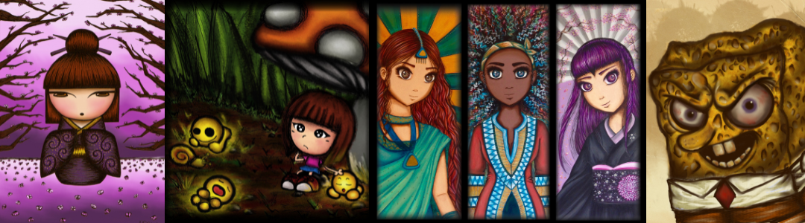
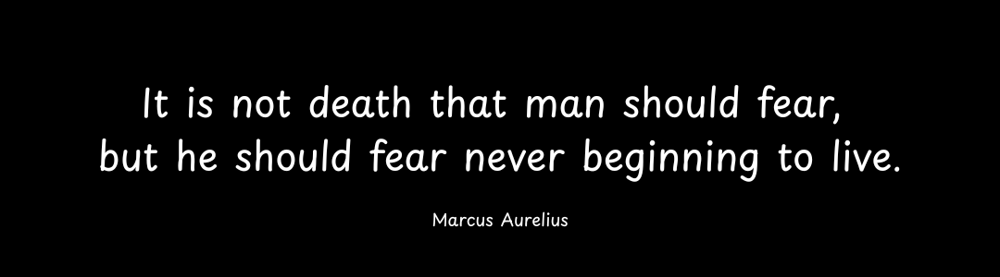
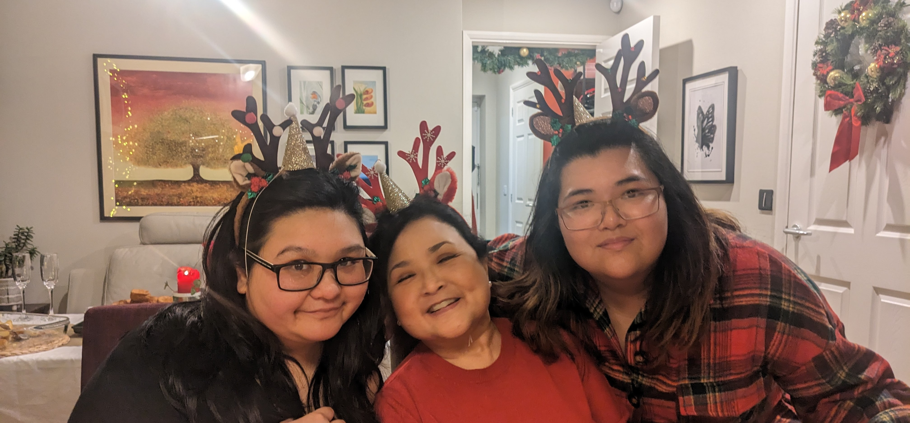

🎨 Mixed-media artist, still experimenting
🌱 My work explores belonging and quiet connection
🍃 Inspired by nature, nostalgia, and the mess of being human
💊 Rooted in chronic illness, cultural shifts, and hard questions
🎓 Studied A-level Art, but the creative instinct came first
🌻 Building a 49-piece series: Rooted Connections
📝 I write too — tangled thoughts live on Substack
💛 My goal? To help people feel they belong
Exploring the heart through artAnna Legaspi
Artist & Connector
Based in Rugby, UK
Hi, I’m Anna Legaspi—and I make art that helps people feel they belong and they matter.
One of my earliest memories—maybe when I was about four years old—is sitting on the bed staring at my mum's drawing of a perfect smiley face on a yellow Post-it. Her line was smooth—effortless. I tried to copy it, again and again, but mine were always wobbly and wonky. Eventually, I asked her, “How do you do it so well?” She just smiled and said, “You just keep drawing.”
And I did. I never really stopped.
Multitasking at age four: splits and scribbles.
All through my childhood and high school years in the Philippines, art was a constant. I have vivid memories of drawing and painting with my classmates, whilst eating all the sweets we could find. We bonded, and also quietly eyed each other’s work. I won’t lie—sometimes I was jealous. I had a few friends whose work made me think, "Damn, I want to be that good." It motivated me. It pushed me to keep improving, to keep showing up, to find my own voice.
Art wasn’t just something I loved—it was also where I belonged.
Me and my art crew at 16 — rocker vibes, Ranma sketches, Sailor Moon swaps, and PowerPoint masterpieces. I may look half-asleep, but these girls lit up my creative world.
When I moved to the UK at 17, I carried that creativity across continents. I chose A-level Art without question—it was the only thing that made sense. I still remember the way the paint smelled, and how making art helped me feel anchored while everything else felt foreign. My sketchbooks from that time were full of isolation and sadness—but they were honest.
A page from my A-level sketchbook — a feeling of isolation and feeling alone.
At 21, my mum—who was the only adult I could rely on—became seriously ill with kidney failure. She had to return to the Philippines for treatment, and suddenly it was just me and my younger sister here in the UK. No extended family. No safety net. Just the two of us.
Neo prints from before everything changed. We were loud, silly, inseparable. Suddenly it was just us — and we had to grow up fast.
I became the adult. I worked. Paid the bills. Took on the debts. Told my sister to focus on school and not worry about money. I thought I was protecting us. And maybe I was. But the cost was steep. I stopped drawing. I stopped dreaming.
That said, I never completely stopped. Over the years, I found myself coming back to art in waves—brief periods where I painted or made something. It was never consistent, but the desire to be creative was always there, waiting for a window to open.
Pieces from those in-between moments — each one part of a slow, uncertain return to myself.
Then, a few months ago, came my own diagnosis: stage IV kidney failure. The same disease my mum had. I’d known it was coming, but hearing that I had two years before needing dialysis or a transplant knocked the air out of me. I was suddenly face-to-face with the looming weight of my own mortality.
This marked the beginning of something new.
And then I asked myself the hard question: If I was going to die soon, what would I want to do?
The answer was clear: I want to create. I want to connect. I want to live with meaning.
Through that reckoning, I returned to art—but this time with purpose. I attended a course that allowed me to inquire who I really was underneath everything I’d carried. And I found the words I’d been circling for years:
My purpose is to heal relationships and create authentic connections.
That purpose now runs through everything I make. My art isn’t just about aesthetics or style—it’s about people. At the heart of it is everybody. My family and friends, the connections I’ve made in life, the stranger walking down the street, every single person. It’s about the invisible golden thread that connects us to all living beings.
This is my golden thread — it extends to my loved ones, and to you too.
I don’t know exactly what the future holds for my health—and I'm still in the process of accepting this. What I do know is that I’m here now. I’m creating work that nourishes me. I’m building spaces where others can feel a little less alone. And I’m shaping a body of work that quietly says:
You belong. You matter.
If you’ve made it this far — thank you for walking this journey with me. We’re all tangled in this together, in this invisible golden thread of connection. Anna - April 2025